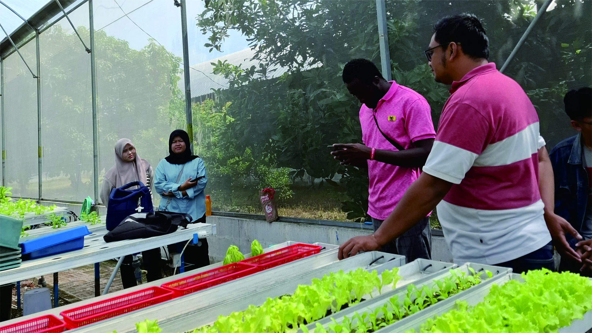
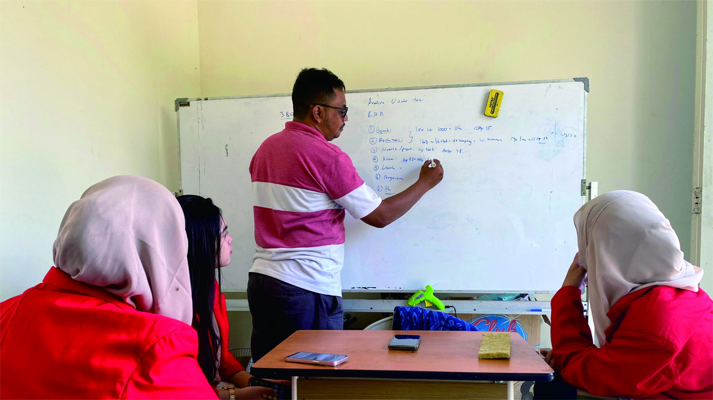
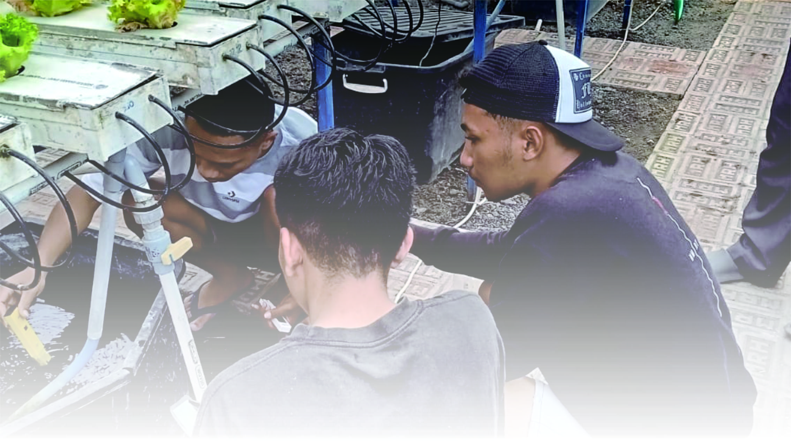
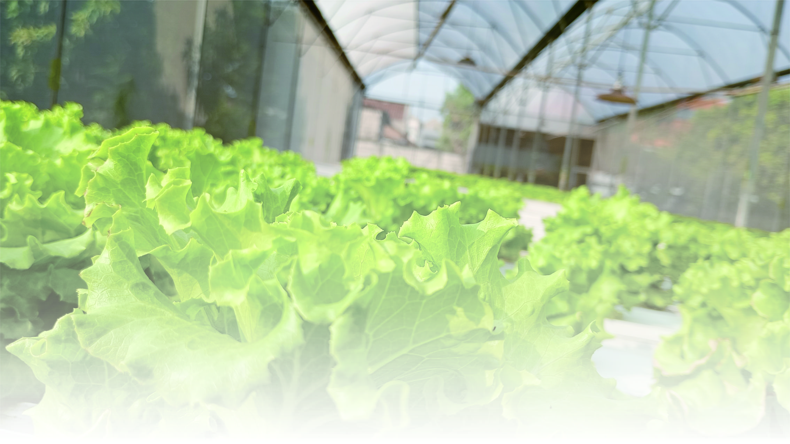

Awal mula berdirinya Emak farm and hydroponic pada tahun 2018 didasari oleh adanya Iahan yang cukup luas di daerah Wadungasri, Waru, Sidoarjo. Lahan yang terletak di perbatasan Surabaya dan Sidoarjo tersebut dirasa strategis sehingga memudahkan distribusi sayur maupun orang yang mau berkunjung ke kebun. Waktu tempuh dari tol Waru ke tol Tambak Sumur (ruas tol Waru — Juanda) hanya berkisar 10 menit. Pada tahun 2020, kebun Emak mengikuti pameran di PTC (Pakuwon Trade Center) Surabaya, ketika peserta yang lain sibuk berjulan sayur dan alat hidroponik, tim kebun emak hanya membawa sayur yang sudah rusak terserang hama, namun diluar dugan, respon pengunjung yang antusias ingin tahu lebih dalam tentang pertanian hidroponik karena banyak dari mereka yang hanya sekedar bisa menanam tanpa tahu cara merawat tanaman hidroponiknya. Setelah pameran tersebut, terjadi sedikit pergeseran tujuan kebun emak yang awalnya hanya pemanfaatan Iahan kini tujuannya menjadi kebun yang bermanfaat. Manfaat sebagai sarana edukasi, bermanfaat memenuhi kebutuhan pasar, manfaat memenuhi kebutuhan pertanian bagi para petani binaan dan manfaat dalam membantu membuka potensi pasar sayur petani binaanya.

sebagai kebun yang berlokasi di perkotaan dan menanam beraneka ragam sayur maupun buah, kami membuka kesempatan bagi masyarakat yang ingin berkunjung kekebun baik sekedar melihat, memanen maupun belajar mengenai hidroponik. Selain itu kami juga membuka kesempatan bagi mahasiswa atau pelajar yang ingin melakukan aktifitas penelitian maupun magang di kebun kami.


Sebagai kebun yang sudah berdiri selama 5 tahun dan memiliki lokasi yang strategis dan luas menjadikan Kebun Emak sebagai tujuan utama penelitian dan magang di Surabaya raya Adapun tahapan dalam melaksanakan penelitian / magang yaitu menghubungi kontak tertera untuk berdiskusi mengenai judul dan aktifitas yang akan dilakukan. Selanjutnya peserta menyerahkan surat pengantar dari instansi asal. Peserta magang / penelitian akan mendapatkan 3 materi hidroponik (dasar budidaya, budidaya hidroponik dan bisnis hidroponik), dan akses untuk beraktifitas di dalam kebun selama masa magang / penelitian. Pada akhir periode, peserta akan mendapatkan surat selesai magang dan sertifikat.
| No | Nama | Jumlah Peserta | Asal Instansi | Aktivitas | Tema | Waktu | Ket |
|---|---|---|---|---|---|---|---|
| 1 | Arvyan CS | 5 Orang | Agrotek UPN VT Jatim | Magang | - | 18 Januari 2021 – 18 Februari 2021 | - |
| 2 | M. Fachmi | 1 Orang | Teknik Instrumentasi ITS | Magang | - | 15 Februari 2021 – 15 Maret 2021 | - |
| 3 | Imka | 1 Orang | Unipa | Magang | - | 1 Februari 2021 – 1 Maret 2021 | - |
| 4 | Yuniar CS | 3 Orang | Unipa | Magang | - | 8 Februari 2021 – 8 Maret 2021 | - |
| 5 | Agus M. Jarir | 1 Orang | Agrotek UPN VT Jatim | Magang | - | 10 Januari 2022 – 9 Februari 2022 | - |
| 6 | Maduri CS | 4 Orang | Faperta Universitas Trunojoyo Madura | Magang | - | 10 Januari 2022 – 9 Februari 2022 | Preview |
| 7 | Talitha CS | 2 Orang | Agrotek UPN VT Jatim | Magang | - | 1 Agustus 2022 – 31 Agustus 2022 | - |
| 8 | Galan CS | 5 Orang | Agribisnis UPN VT Jatim | Magang | - | 1 Agustus 2022 – 31 Agustus 2022 | - |
| 9 | Fitria CS | 5 Orang | Agrotek UPN VT Jatim | Magang | - | 2 Januari 2023 – 2 Februari 2023 | - |
| 10 | Zaydan | 1 Orang | Agrotek UPN VT Jatim | Skripsi | Dosis dan Interval POC | 1 Maret 2023 – 1 Mei 2023 | Preview |
| 11 | Ayunda | 1 Orang | Agribisnis UPN VT Jatim | Skripsi | Perancangan dan Pengembangan Agrosistem | 1 Maret 2023 – 1 Mei 2023 | Preview |
| 12 | Falahah Cs | 2 Orang | Faperta Universitas Trunojoyo | Magang | - | 1 Juli 2023 – 1 Mei 2023 | Preview |
| 13 | Patria CS | 2 Orang | Agrotek UPN VT Jatim | Magang | - | 2 Januari 2024 – 2 Februari 2024 | - |
| 14 | Wella | 1 Orang | Agrotek UPN VT Jatim | Magang | - | 24 Juli 2024 – 24 Agustus 2024 | - |
| 15 | Raihan | 1 Orang | Instrumentasi ITS | TA | Sensor Aliran Air | 1 Mei 2024 – 1 Agustus 2024 | - |
| 16 | Teppy | 1 Orang | Instrumentasi ITS | PKM | Sensor Kelembaban, TDS dan Ph Meter | 1 Mei 2024 – 1 Agustus 2024 | - |
| 17 | Arin | 1 Orang | Agrotek UPN VT Jatim | Skripsi | Pengaruh kecepatan pompa dan media tanam | 1 Mei 2024 – 1 Agustus 2024 | - |
| 18 | Hardi Cs | 4 Orang | Politeknik Negeri Kupang, NTT | Magang | - | 1 September 2024 – 1 Desember 2024 | - |
| 19 | Vivin CS | 5 Orang | Untag, Surabaya | WMK | - | 1 Oktober 2024 – 1 November 2024 | Preview |
| 20 | Vira Triana | 1 Orang | UPN VT Jatim | Skripsi | Perlakuan dosis dan inteval pada Wick Sistem | 1 Oktober 2024 – 1 November 2024 | - |
| 21 | Iftah CS | 2 Orang | UPN VT Jatim | Magang | - | 1 Januari 2025 – 1 Februari 2025 | - |
| 22 | Rino | 1 Orang | Agrotek UPN VT Jatim | Magang | - | 1 Januari 2026 – 1 Februari 2026 | - |
| 23 | Helda | 1 Orang | Agribis UPN VT Jatim | MBKM | - | 1 Februari 2026 – 1 Juni 2026 | Preview |
| 24 | Allayna CS | 2 Orang | Agribis UPN VT Jatim | Magang | - | 1 Juli 2026 – 11 Agustus 2026 | - |
| 25 | Aldio | 1 Orang | Agrotek UPN VT Jatim | Magang | - | 1 Juli 2026 – 11 Agustus 2026 | - |

Selain sebagai sarana edukasi dan rekreasi, kebun kami tetap menjalankan fungsi utamanya yaitu produksi dan penjualan. Selama beberapa tahun ini ada lebih dari 15 komoditas yang pernah kita budidayakan baik kelompok oriental (sawi sawian), aneka selada hingga sayuran buah (tomat cherry) hingga melon. Berikut merupakan daftar tanaman beserta ketersediaannya.